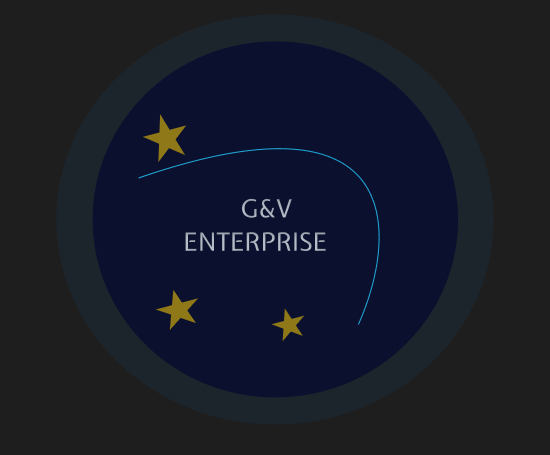
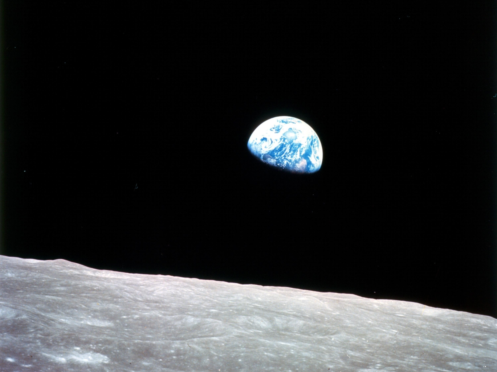
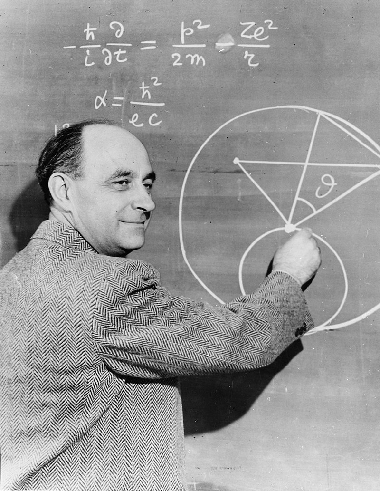
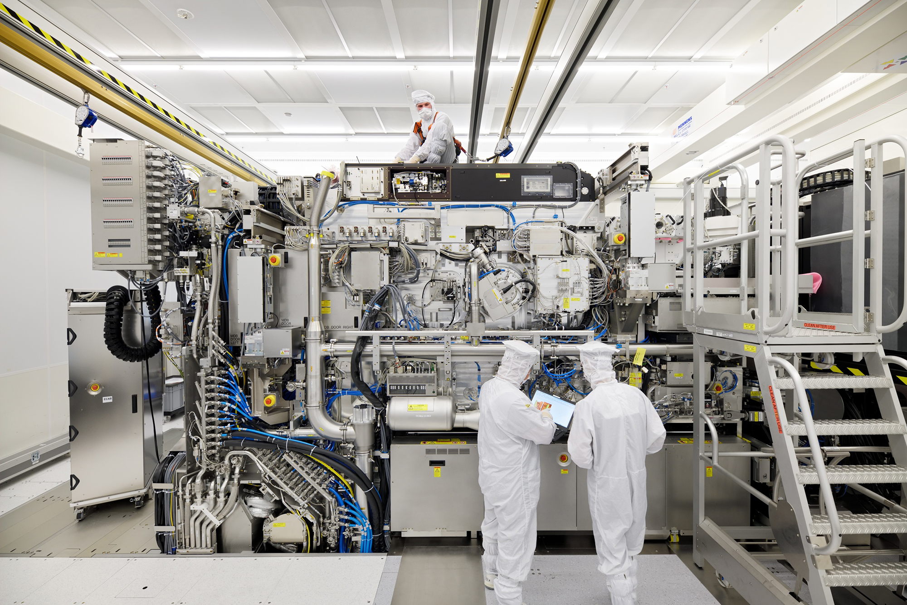
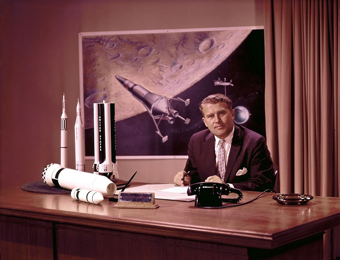
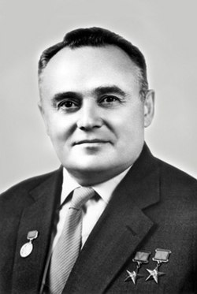
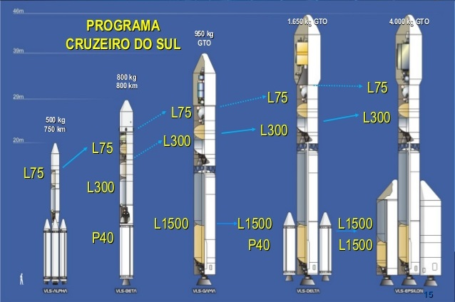
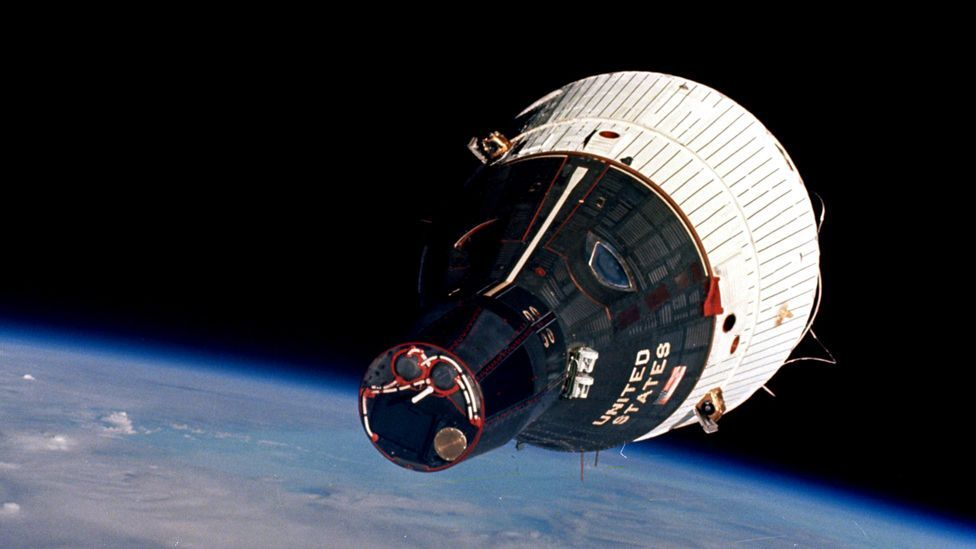

 Nosso fundadador foi Antonio Carlos, brasileiro nascido na cidade Mineira de Porto Feliz.
Desde de muito jovem tinha apreço por um telescópio de seu avô,contudo não tinha idade e nem permissão para mexer no objeto mágico, mas sua curiosidade era tremenda que mesmo assim ele resolveu
investigar tal objeto mágico.
Ao se aproximar do velho telescópio, o jovem garoto observou que seu avô estava olhando para a lua, mas afinal porquê a lua ?
 Desdes os tempos mais remotos a humanidade teve um apreço enorme por corpos celestiais, e suas relações
misticas com nossas vidas, além da tremenda admiração daquilo que não podemos tocar, somente ver.
Após se formar no Instituto Militar do Rio de Janeiro, Mario continuou com seus estudos em mecanica e física
trazendo para o Brasil mentes brilhantes que o ajudaram a fundar a G & V ENTERPRASE.
Presente na vida de milhares Brasileiros, contribuindo para o avanço social e científico do mundo, especialmente em foguetes, temos fabricas em Campinas,Monte Alegre e São José dos Pinhais
com modernas instalações de desemvolvimento e pesquisa, com centros locais como a UNICAMP e internacionais como a École de France.
O HOMEM E A LUA
Os Trabalhos realizados pelo russo konstantin-tsiolkovsky, no século no final
do século XIX, inauguraram a era da exploração espacial, primeiramente especulativa e teórica, mas apenas décadas após os apontamentos de Konstantin, o Homem finalmente colocaria
sua presença em nosso satélite natural.
Logo após a Segunda Grande Guerra, todo o conhececimento adquirido pela Alemanha Nazista foi recolhido pelas
potencias vencedoras, mentes como a de Von Brau, antes trabalhavam para o governo alemão, agora estava em serviço aos estados unidos.Já na União soviética Korolev realizava milagres
ao colocar satélites e homens no espaço. Mas afinal nesse momento a corrida espacial só interessava as grandes potencias EUA vs URSS.

 Mas finalmente após a corrida um lado prevaleceu, os Americanos com o programa Apollo, venceram a corrida até a Lua
indo por seis vezes, até o ano de 1972, sem deixar uma presença humana duradoura em nosso satélite natutal.
Portanto temos a missão de mudar tal situação, pois nosso futuro reside lá junto ás estrelas
Mas finalmente após a corrida um lado prevaleceu, os Americanos com o programa Apollo, venceram a corrida até a Lua
indo por seis vezes, até o ano de 1972, sem deixar uma presença humana duradoura em nosso satélite natutal.
Portanto temos a missão de mudar tal situação, pois nosso futuro reside lá junto ás estrelas
TECNOLOGIA
Temos lançados anualmente dois fogutes sub-orbtais, e um geoestacionário a fim de que possamos adquirir tecnologia necessária para enviar nosso primeiro ser humano em órbita, em nome da G & V ENTERPRASE.
realizado por uma empresa brasileira.
Exemplo de nosso modelo mais recente produzido em Campinas, o projeto Cruzeiro do sul, que
consiste em uma série foguete reutilizáveis de estágios que retornam à base de lançamento(Localizada em Alcântra no Maranhão),após colocarem um módulo em órbirta, ou seja, atinge a velocidade de 28 mil km/h.
Modelo da Cápsula Batizada como Verônica, em homenagem a mulher de nosso fundador, ela partirá da terra com 5 tripulantes com direção à Lua, mas calma vamos apenas
orbitar nosso satélite, nosso analistas prevêm que ao menos de 2045 nossa companhia terá capacidade de fazer viagens regulares à terra, a fim de abastecer e suprir os humanos lá residentes.